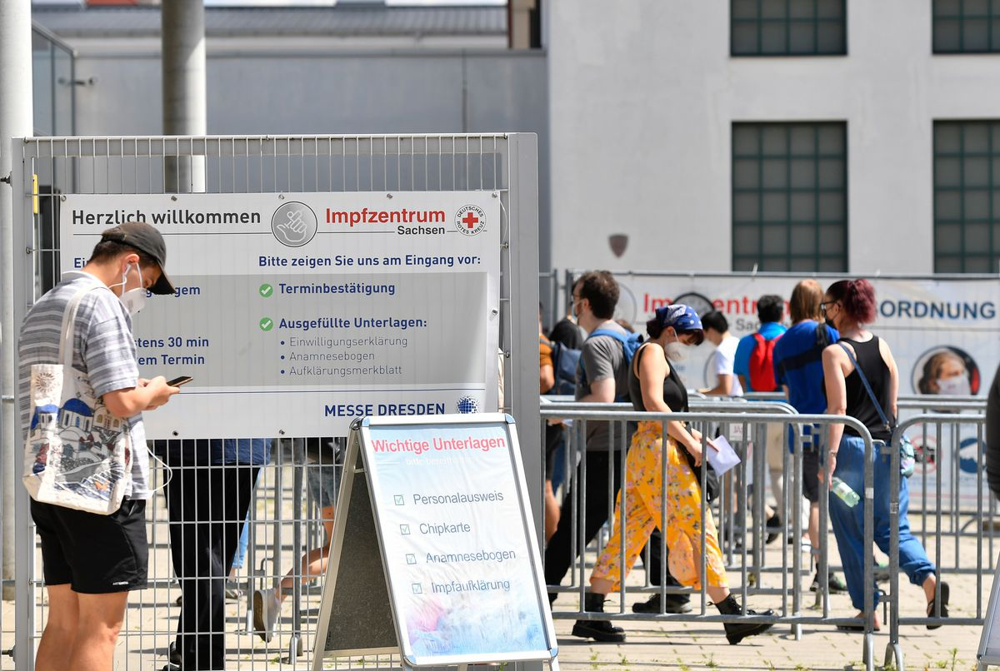

Die Berliner Landesregierung hat im Bereich Wohnungspolitik erneut eine herbe Schlappe einstecken müssen. Im Frühjahr war das einstige Vorzeigeprojekt im Kampf gegen steigende Mieten – der sogenannte Mietendeckel – vom Bundesverfassungsgericht einkassiert worden, nun macht das Bundesverwaltungsgericht dem rot-rot-grünen Senat erneut einen Strich durch die Rechnung: Die Richter stoppten die in Berlin häufig angewendete Vorkaufspraxis bei Grundstücken in Milieuschutzgebieten.
Was sind Vorkäufe und wie werden sie angewendet?
In vielen Städten steigen die Mieten seit Jahren rasant an. Kommunalpolitikerinnen und -politiker setzen deshalb verstärkt auf das sogenannte Vorkaufsrecht. Es ermöglicht einer Gemeinde, Investoren ein Haus oder Grundstücke in Gebieten mit angespannten Wohnungsmärkten vor der Nase wegzukaufen. Denn dann greift die übliche Methode vieler Investoren nicht mehr: modernisieren und dann die Miete kräftig erhöhen. Die ursprünglichen Käufer können den Vorkauf nur verhindern, indem sie strenge Abwendungsvereinbarungen unterzeichnen, die insbesondere Luxussanierungen und starke Mieterhöhungen ausschließen.
Vor allem Florian Schmidt (Die Grünen), Baustadtrat im Szenekiez Friedrichshain-Kreuzberg, hat die Methode in seinem Bezirk in den vergangenen Jahren konsequent umgesetzt und damit für viel Aufsehen gesorgt. Bei rund 800 Wohnungen zog sein Bezirk nach eigenen Angaben das Vorkaufsrecht, mit dem Ziel, »die Verdrängung der Wohnbevölkerung zu vermeiden«. Die Vorkäufe sind Teil einer größeren Strategie, die kommunalen Bestände des Bezirks zu erhöhen – und damit den Anstieg der Mieten insgesamt zu bremsen.
Eine Reihe von weiteren Bezirken kopierte das Verfahren, aber auch in anderen Großstädten werden immer mehr solcher Vorkäufe angewandt. München etwa hat im vergangenen Jahr so oft Immobilien vorgekauft wie noch nie in den vergangenen 20 Jahren. Die Stadt ließ sich die 21 Deals rund 146 Millionen Euro kosten.
In Hamburg ist der Bahnhof Altona prominentes Beispiel für solch ein Vorgehen. Seit Juli gehört das Grundstück der Stadt. Sie hat es dem ursprünglich vorgesehenen Käufer, der Volksbank Braunschweig Wolfsburg, weggeschnappt. Auf frei werdenden Gleisflächen sollen neue Wohnungen entstehen.
Wie begründet das Gericht sein Urteil?
Im konkreten Berliner Fall hatte das Bezirksamt mit dem zuständigen Stadtrat Schmidt das Vorkaufsrecht bei einem Mietshaus im Kreuzberger Bergmannkiez mit 20 vermieteten Wohnungen gezogen. Statt an ein Immobilienunternehmen ging das Grundstück in den Besitz einer landeseigenen Wohnungsbaugesellschaft. Für das Haus bestand wegen einstiger Förderung eine Mietpreisbindung bis zum Jahr 2026. Die vom Bezirk geforderte Abwendungsvereinbarung, die Mieterhöhungen ausgeschlossen hätte, lehnte das Unternehmen aber ab.
Der Bezirk befürchtete, das Unternehmen könnte nach dem Ende der Preisbindung die Mieten erhöhen, Wohnungen in Privateigentum umwandeln und so Altbewohner aus dem Kiez verdrängen. Das Unternehmen klagte gegen den Vorkauf.